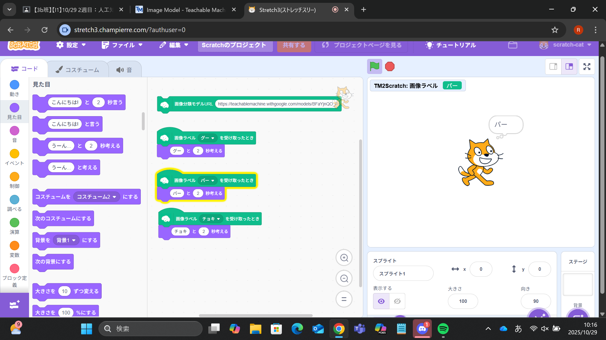
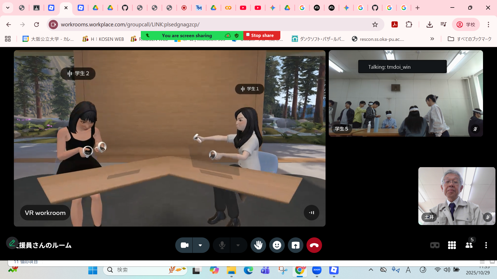
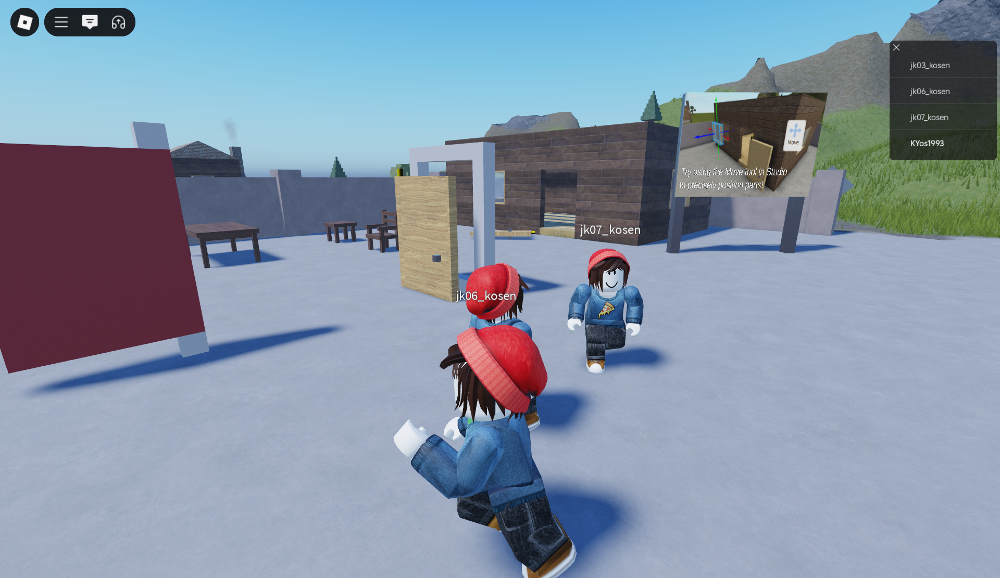

第2週目
2-1 2週目のレポートをHTMLで作る
1.内容
1週目ではScratchを用いて線画やゲームを作成し、プログラミングの基本的な仕組みを体験した。
また、HTMLを用いて自分のホームページを作成し、世界に公開する方法を学習した。
2.感想
Scratchで線画やゲームを作成する過程は、直感的にプログラミングの仕組みを理解できる良い体験であった。
さらにHTMLを用いて自分のホームページを作成し公開することで、情報発信の重要性を実感でき、学習意欲が高まった。
2-2 機械学習体験

1.内容
Teachable Machineを用いて「グー」「チョキ」「パー」の画像を学習させ、実際に私が出した手をリアルタイムで判別する機械学習モデルを体験し、
その仕組みを理解するとともに人工知能の応用可能性を学んだ。
2.感想
この体験は、機械学習の仕組みを直感的に理解できる良い機会であった。
自分の動作が即座に分類される様子を見て、人工知能の応用可能性や実用性を強く実感でき、学習意欲がさらに高まった。
2-3 VR（バーチャルリアリティー：Virtual Reality）の体験
 
1.内容
VRゴーグルを使用し、ロブロックスの仮想世界を探索する体験を行った。
実際に自分の視界が仮想空間に広がることで、没入感や臨場感を強く感じることができ、VR技術の可能性を理解する学習となった。
2.感想
VRゴーグルを用いてロブロックスの世界を体験したことで、現実とは異なる仮想空間に没入する感覚を味わえた。
視界全体が仮想世界に広がる臨場感は非常に新鮮で、ゲームや学習への応用可能性を強く感じる良い経験となった。